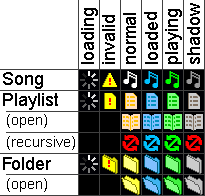

PM123's Playlist Icons

Item type
- Playlist
- A playlist is any collection of other items that is directly editable by PM123.
If the content of a playlist is expanded, the playlist is shown as 'open'.
- Recursive Playlist
- In the Playlist Manager View playlists may be marked as recursive.
Recursive playlists can occur if playlist A contains playlist B and vice versa.
In this case the playlist manager will mark copies of already open playlists or folders as recursive.
You cannot expand recursive items to prevent infinite recursions.
It depends on the current view which item of a recursive cycle is marked as recursive.
If you show A then the reference to A in B is marked recursive.
If you show B then the reference to B in A is marked recursive.
- Folder
- A folder is any collection of items that is not editable by PM123.
E.g. a view of a file system folder.
If the content of a folder is expanded, it is shown as 'open'.
- Song
- A song is anything else not mentioned so far.
This includes radio streams and whatever.
Item state
- loading
- PM123 does not know the status of the current item so far.
- invalid (yellow)
- PM123 cannot use the item.
This includes if there is an I/O error (e.g. file not found) as well as
if PM123 does not know how to handle the current item (e.g. no appropriate decoder is installed).
The technical info string may contain an error message.
- loaded (blue)
- The item is currently loaded by the player but not yet playing.
This includes the current song as well as any playlist in the call stack.
- playing (green)
- The item is currently played.
- shadow (gray)
- The item is currently loaded but from another context.
This happens e.g. if two playlists A and B contain a song S
and playlist A is currently loaded and at song S but your playlist window shows playlist B.
Also if a playlist contains an item twice, the other item will always be marked as shadow
if one of them is current.
In contrast to the status loaded or playing 'shadow' does not imply
that navigation to the next entry navigates to next item in the current view.